03_heatmap_demystified
2025-10-08
Last updated: 2025-11-02
Checks: 7 0
Knit directory: data_visualization_in_R/
This reproducible R Markdown analysis was created with workflowr (version 1.7.1). The Checks tab describes the reproducibility checks that were applied when the results were created. The Past versions tab lists the development history.
Great! Since the R Markdown file has been committed to the Git repository, you know the exact version of the code that produced these results.
Great job! The global environment was empty. Objects defined in the global environment can affect the analysis in your R Markdown file in unknown ways. For reproduciblity it’s best to always run the code in an empty environment.
The command set.seed(20251007) was run prior to running
the code in the R Markdown file. Setting a seed ensures that any results
that rely on randomness, e.g. subsampling or permutations, are
reproducible.
Great job! Recording the operating system, R version, and package versions is critical for reproducibility.
Nice! There were no cached chunks for this analysis, so you can be confident that you successfully produced the results during this run.
Great job! Using relative paths to the files within your workflowr project makes it easier to run your code on other machines.
Great! You are using Git for version control. Tracking code development and connecting the code version to the results is critical for reproducibility.
The results in this page were generated with repository version 8c9b351. See the Past versions tab to see a history of the changes made to the R Markdown and HTML files.
Note that you need to be careful to ensure that all relevant files for
the analysis have been committed to Git prior to generating the results
(you can use wflow_publish or
wflow_git_commit). workflowr only checks the R Markdown
file, but you know if there are other scripts or data files that it
depends on. Below is the status of the Git repository when the results
were generated:
Ignored files:
Ignored: .Rproj.user/
Ignored: .claude/
Note that any generated files, e.g. HTML, png, CSS, etc., are not included in this status report because it is ok for generated content to have uncommitted changes.
These are the previous versions of the repository in which changes were
made to the R Markdown
(analysis/03_heatmap_demystified.Rmd) and HTML
(docs/03_heatmap_demystified.html) files. If you’ve
configured a remote Git repository (see ?wflow_git_remote),
click on the hyperlinks in the table below to view the files as they
were in that past version.
| File | Version | Author | Date | Message |
|---|---|---|---|---|
| Rmd | 8c9b351 | crazyhottommy | 2025-11-02 | first commit |
| html | 8c9b351 | crazyhottommy | 2025-11-02 | first commit |
Heatmap Demystified: Understanding the Critical Nuances
Making heatmap is an essential skill for any computational biologist, but most people don’t truly understand heatmaps. This tutorial will walk you through the critical nuances that can make or break your data interpretation.
The Golden Rule of Heatmaps
CRITICAL INSIGHT: The defaults of almost every heatmap function in R do hierarchical clustering FIRST, then scale the rows, then display the image. The
scaleparameter only affects color representation, NOT clustering!
This is perhaps the most misunderstood aspect of heatmaps and can lead to completely wrong biological interpretations.
Load the libraries
library(ComplexHeatmap)Loading required package: grid========================================
ComplexHeatmap version 2.20.0
Bioconductor page: http://bioconductor.org/packages/ComplexHeatmap/
Github page: https://github.com/jokergoo/ComplexHeatmap
Documentation: http://jokergoo.github.io/ComplexHeatmap-reference
If you use it in published research, please cite either one:
- Gu, Z. Complex Heatmap Visualization. iMeta 2022.
- Gu, Z. Complex heatmaps reveal patterns and correlations in multidimensional
genomic data. Bioinformatics 2016.
The new InteractiveComplexHeatmap package can directly export static
complex heatmaps into an interactive Shiny app with zero effort. Have a try!
This message can be suppressed by:
suppressPackageStartupMessages(library(ComplexHeatmap))
========================================library(stats) # for base heatmap()
library(gplots) # for heatmap.2()
Attaching package: 'gplots'The following object is masked from 'package:stats':
lowesslibrary(circlize) # for color functions========================================
circlize version 0.4.16
CRAN page: https://cran.r-project.org/package=circlize
Github page: https://github.com/jokergoo/circlize
Documentation: https://jokergoo.github.io/circlize_book/book/
If you use it in published research, please cite:
Gu, Z. circlize implements and enhances circular visualization
in R. Bioinformatics 2014.
This message can be suppressed by:
suppressPackageStartupMessages(library(circlize))
========================================Create dummy data to illustrate key concepts
# Four genes with different expression patterns and scales
h1 <- c(10,20,10,20,10,20,10,20) # High expression, oscillating pattern
h2 <- c(20,10,20,10,20,10,20,10) # High expression, opposite oscillation
l1 <- c(1,3,1,3,1,3,1,3) # Low expression, same pattern as h1
l2 <- c(3,1,3,1,3,1,3,1) # Low expression, same pattern as h2
mat <- rbind(h1,h2,l1,l2)
colnames(mat) <- paste0("timepoint_", 1:8)
mat timepoint_1 timepoint_2 timepoint_3 timepoint_4 timepoint_5 timepoint_6
h1 10 20 10 20 10 20
h2 20 10 20 10 20 10
l1 1 3 1 3 1 3
l2 3 1 3 1 3 1
timepoint_7 timepoint_8
h1 10 20
h2 20 10
l1 1 3
l2 3 1Visualize the expression patterns
par(mfrow = c(1,1), mar = c(4,4,1,1))
plot(1:8, rep(0,8), ylim = c(0,35), pch = "", xlab = "Time", ylab = "Gene Expression")
for (i in 1:nrow(mat)) {
lines(1:8, mat[i,], lwd = 3, col = i)
}
legend(1, 35, rownames(mat), col = 1:4, lwd = 3, cex = 0.7)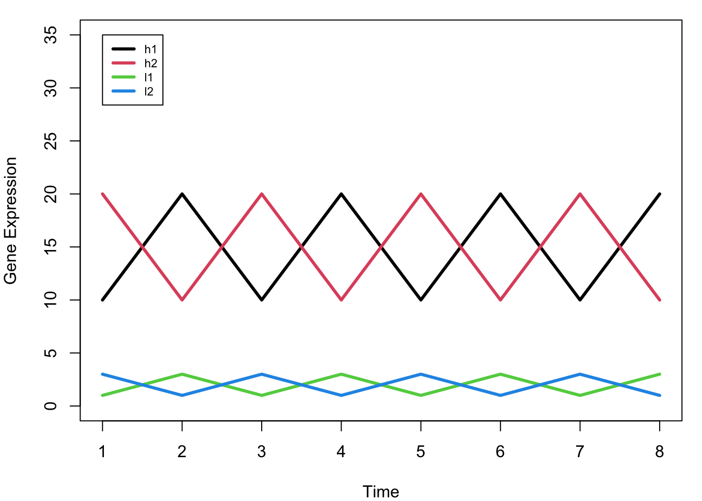
Key Observation: Notice that h1 and l1 have the SAME pattern (just different scales), as do h2 and l2. Ideally, we want h1 and l1 to cluster together, and h2 and l2 to cluster together.
Understanding Distance and Clustering
Default Euclidean Distance
# Calculate pairwise distances using default Euclidean distance
d_euclidean <- dist(mat)
d_euclidean h1 h2 l1
h2 28.284271
l1 38.470768 40.496913
l2 40.496913 38.470768 5.656854# Visualize the clustering based on Euclidean distance
plot(hclust(d_euclidean), main = "Clustering with Euclidean Distance")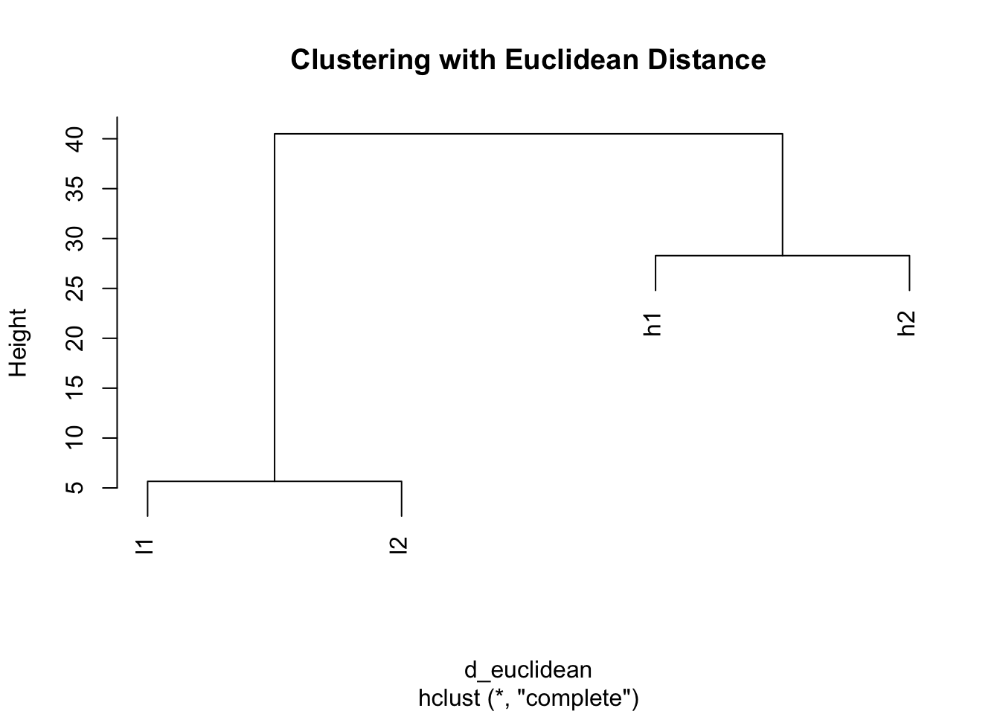
Problem: With Euclidean distance, h1 clusters with h2 (both high values) and l1 clusters with l2 (both low values), ignoring the actual expression patterns!
The Scaling Dilemma: When and How to Scale
Making a basic heatmap
# ComplexHeatmap - no scaling by default
Heatmap(mat, cluster_columns = FALSE, name = "Expression")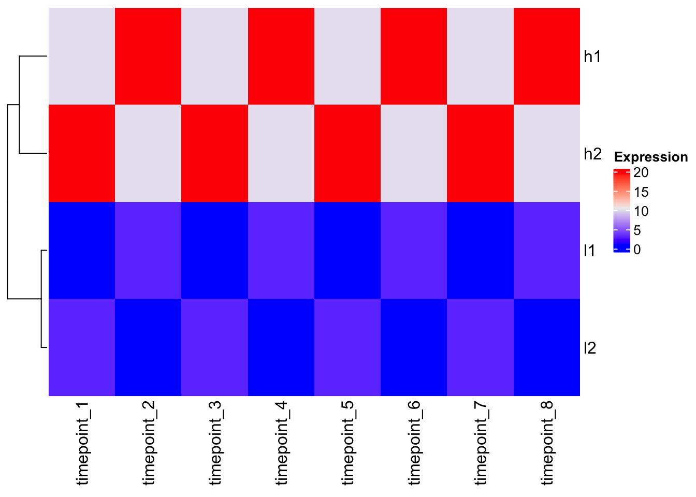
Observation: The clustering follows the Euclidean distance pattern we saw above.
Scaling the data BEFORE clustering
# Scale rows (genes) - center and scale to unit variance
scaled_mat <- t(scale(t(mat)))
scaled_mat timepoint_1 timepoint_2 timepoint_3 timepoint_4 timepoint_5 timepoint_6
h1 -0.9354143 0.9354143 -0.9354143 0.9354143 -0.9354143 0.9354143
h2 0.9354143 -0.9354143 0.9354143 -0.9354143 0.9354143 -0.9354143
l1 -0.9354143 0.9354143 -0.9354143 0.9354143 -0.9354143 0.9354143
l2 0.9354143 -0.9354143 0.9354143 -0.9354143 0.9354143 -0.9354143
timepoint_7 timepoint_8
h1 -0.9354143 0.9354143
h2 0.9354143 -0.9354143
l1 -0.9354143 0.9354143
l2 0.9354143 -0.9354143
attr(,"scaled:center")
h1 h2 l1 l2
15 15 2 2
attr(,"scaled:scale")
h1 h2 l1 l2
5.345225 5.345225 1.069045 1.069045 # Now look at distances after scaling
d_scaled <- dist(scaled_mat)
d_scaled h1 h2 l1
h2 5.291503
l1 0.000000 5.291503
l2 5.291503 0.000000 5.291503# Clustering after scaling
plot(hclust(d_scaled), main = "Clustering After Scaling")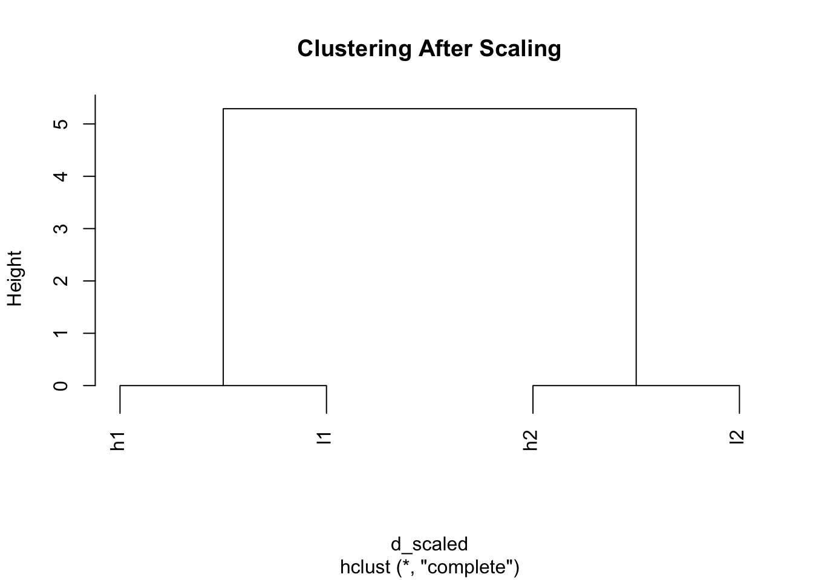
Magic! Now h1 and l1 cluster together, and h2 and l2 cluster together because we’ve removed the scale differences and focused on patterns.
# Heatmap with pre-scaled data
Heatmap(scaled_mat, cluster_columns = FALSE, name = "Scaled\nExpression")Alternative: Using Correlation-based Distance
Instead of scaling, we can use correlation-based distance to focus on patterns:
# Calculate correlation between genes
gene_cor <- cor(t(mat))
gene_cor h1 h2 l1 l2
h1 1 -1 1 -1
h2 -1 1 -1 1
l1 1 -1 1 -1
l2 -1 1 -1 1# Use 1 - correlation as distance
d_correlation <- as.dist(1 - cor(t(mat)))
d_correlation h1 h2 l1
h2 2
l1 0 2
l2 2 0 2# Clustering with correlation distance
hc_cor <- hclust(d_correlation)
plot(hc_cor, main = "Clustering with Correlation Distance")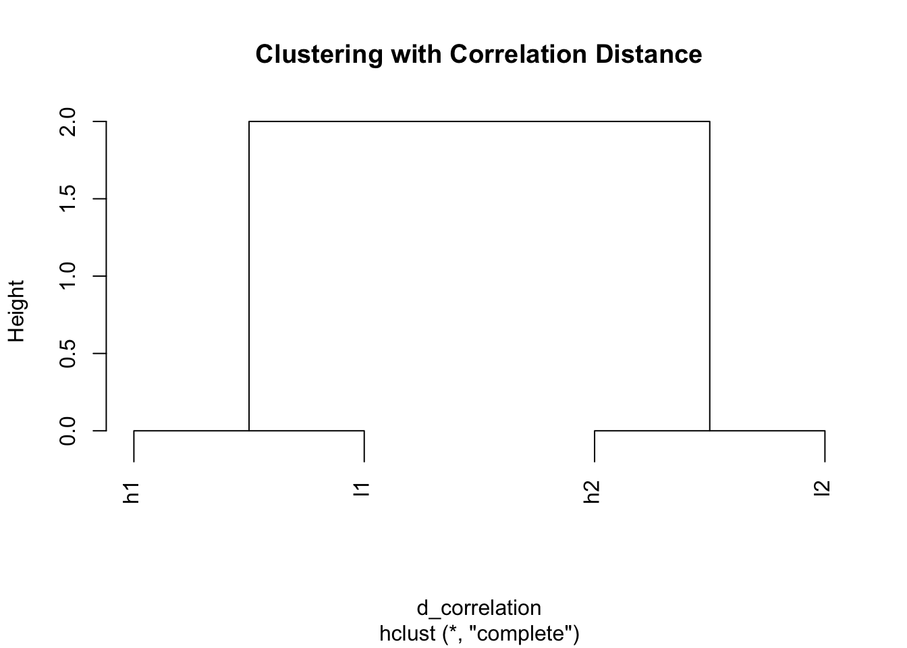
Perfect! Same result as scaling - genes with similar patterns cluster together.
Comparing Heatmap Functions
Base R heatmap() - DEFAULT: scale = “row”
# Base heatmap with default scaling
heatmap(mat, Colv = NA, scale = "row", main = "heatmap() with scale='row'")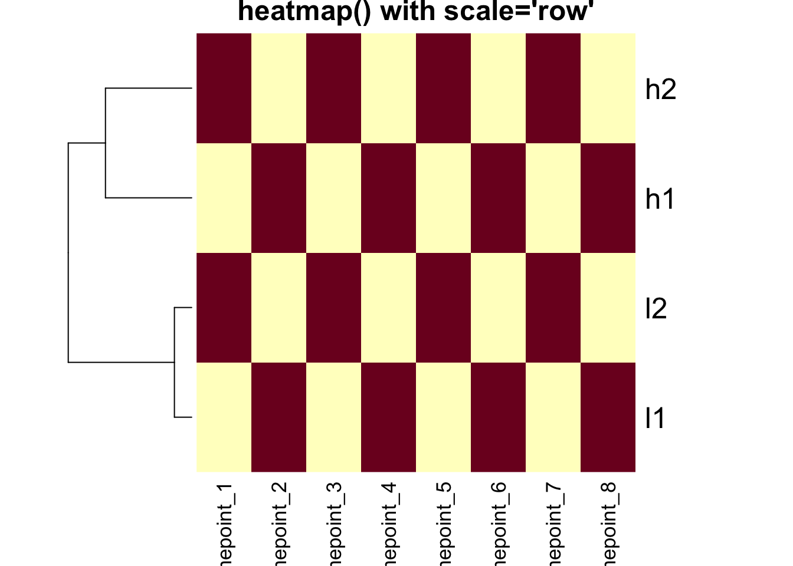
# Base heatmap without scaling
heatmap(mat, Colv = NA, scale = "none", main = "heatmap() with scale='none'")
Critical Point: The clustering is IDENTICAL in both
heatmaps above! The scale parameter only affects the color
representation.
gplots::heatmap.2() - DEFAULT: scale = “none”
# heatmap.2 with default (no scaling)
heatmap.2(mat, trace = "none", Colv = NA, dendrogram = "row",
scale = "none", main = "heatmap.2() scale='none'")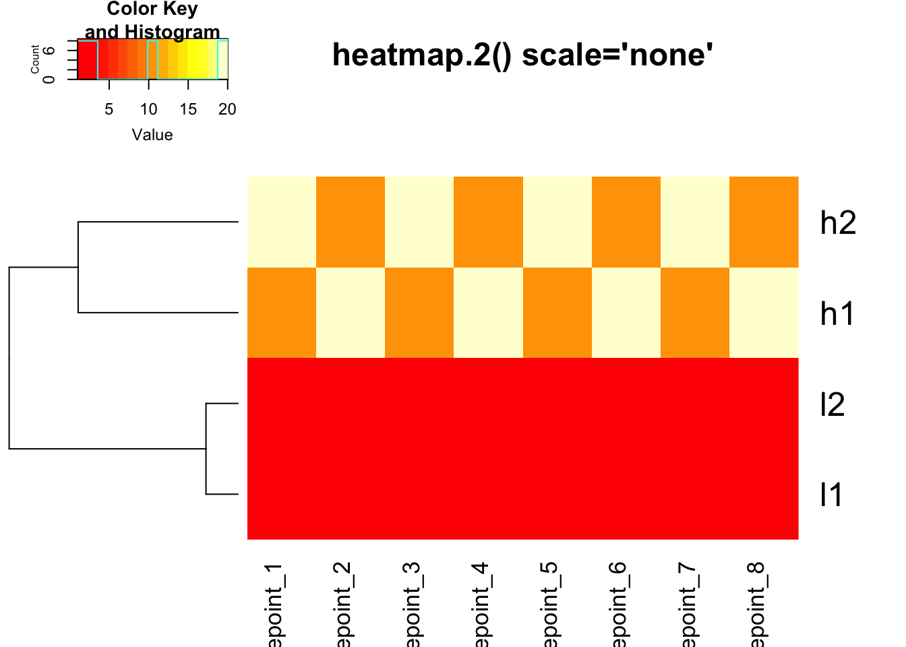
# heatmap.2 with row scaling for colors only
heatmap.2(mat, trace = "none", Colv = NA, dendrogram = "row",
scale = "row", main = "heatmap.2() scale='row'")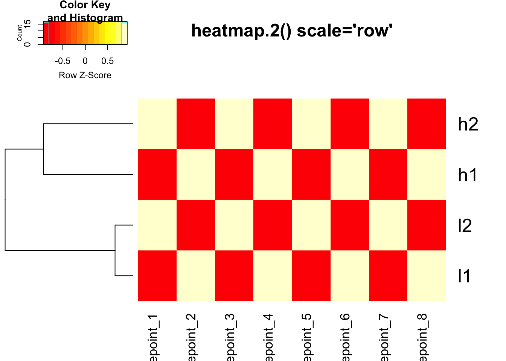
Using custom distance in heatmap.2()
# Use correlation distance with heatmap.2
heatmap.2(mat, trace = "none", Colv = NA, dendrogram = "row",
scale = "none",
hclust = function(x) hclust(x, method = 'complete'),
distfun = function(x) as.dist(1 - cor(t(x))),
main = "Correlation Distance + No Scaling")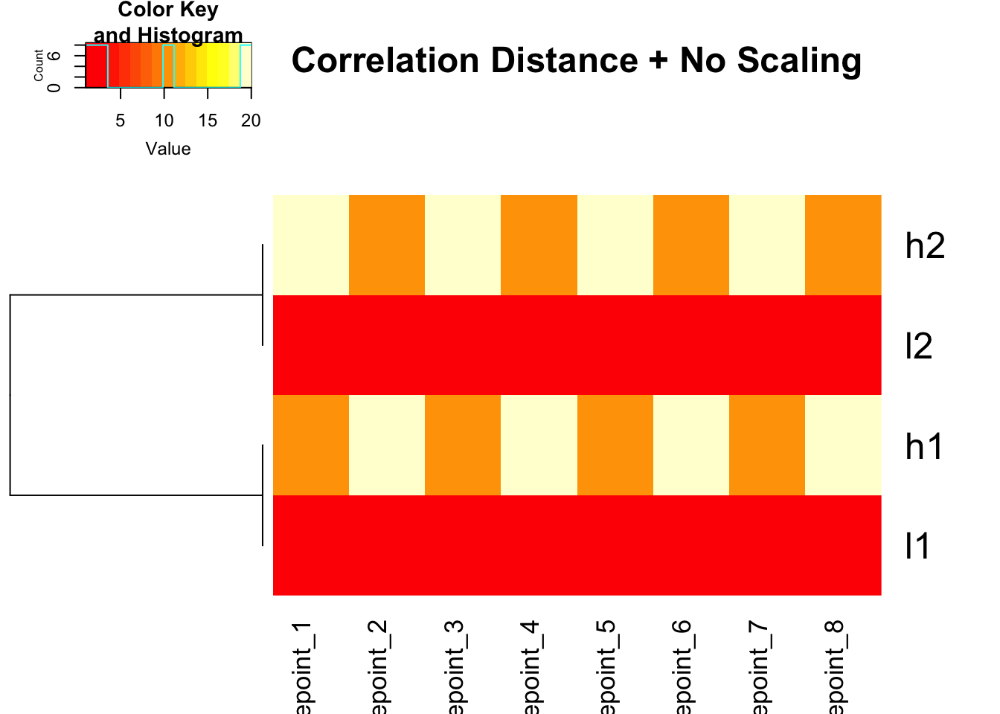
# Use correlation distance + row scaling for colors
heatmap.2(mat, trace = "none", Colv = NA, dendrogram = "row",
scale = "row",
hclust = function(x) hclust(x, method = 'complete'),
distfun = function(x) as.dist(1 - cor(t(x))),
main = "Correlation Distance + Row Scaling")
ComplexHeatmap: The Modern Approach
ComplexHeatmap does NOT scale by default and gives you full control:
# Using pre-scaled data with ComplexHeatmap
Heatmap(scaled_mat, cluster_columns = FALSE, name = "Pre-scaled")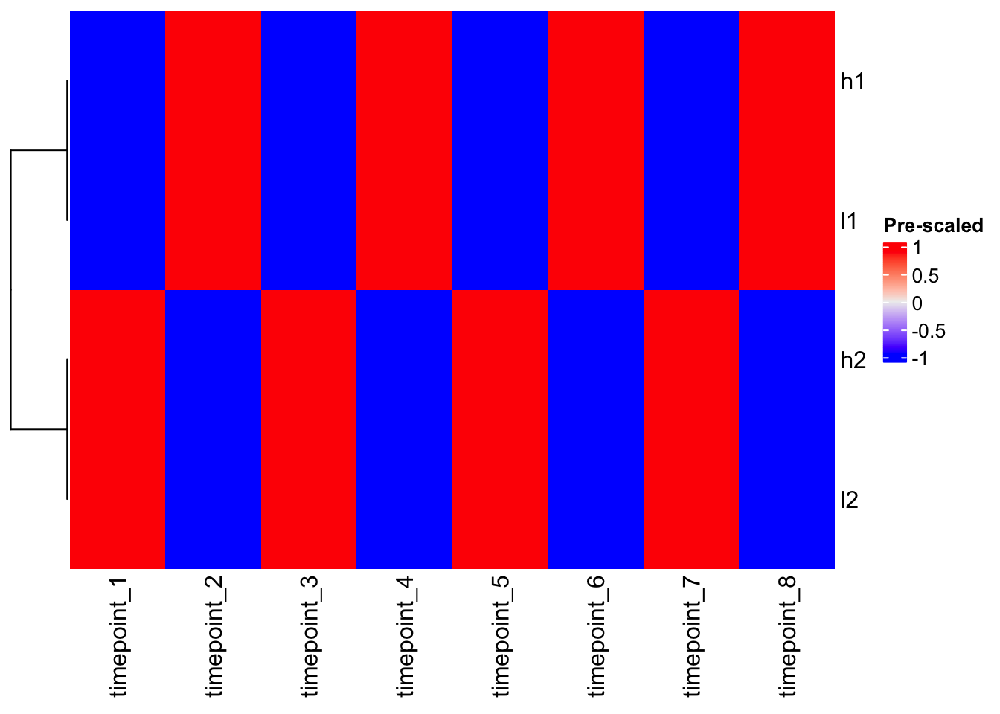
# Using correlation distance with ComplexHeatmap
Heatmap(mat,
cluster_columns = FALSE,
clustering_distance_rows = function(x) as.dist(1 - cor(t(x))),
name = "Expression",
column_title = "Correlation-based Clustering")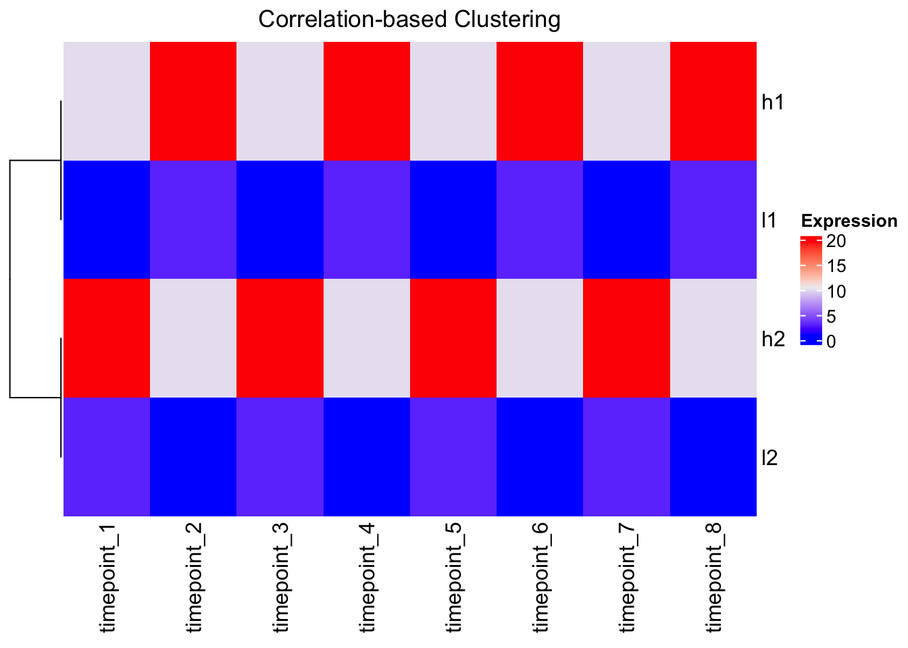
The Outlier Problem
# Add an outlier to demonstrate color mapping issues
mat_outlier <- mat
mat_outlier[1,1] <- 1000 # Extreme outlier
Heatmap(mat_outlier, cluster_columns = FALSE, name = "With Outlier")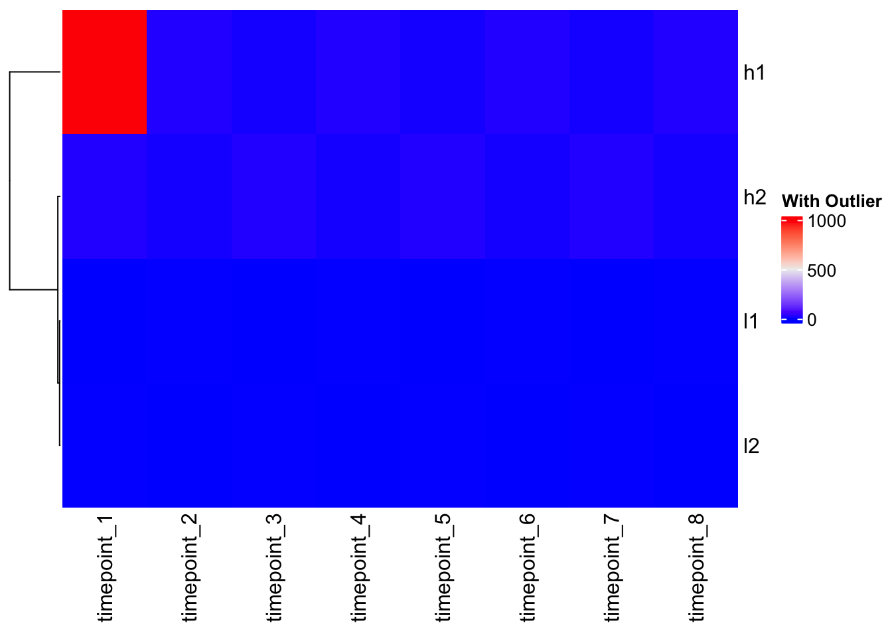
Problem: The outlier dominates the color scale, making all other values look the same!
Solution: Custom color mapping
# Check data quantiles to inform color mapping
quantile(mat, c(0, 0.1, 0.5, 0.9, 1.0)) 0% 10% 50% 90% 100%
1.0 1.0 6.5 20.0 20.0 # Create custom color function based on data distribution
col_fun <- colorRamp2(c(1, 10, 20), c("blue", "white", "red"))
# Apply to outlier data
Heatmap(mat_outlier, cluster_columns = FALSE, col = col_fun, name = "Fixed Colors")
Heatmap(mat_outlier, cluster_columns = FALSE, col = col_fun, name = "Fixed Colors")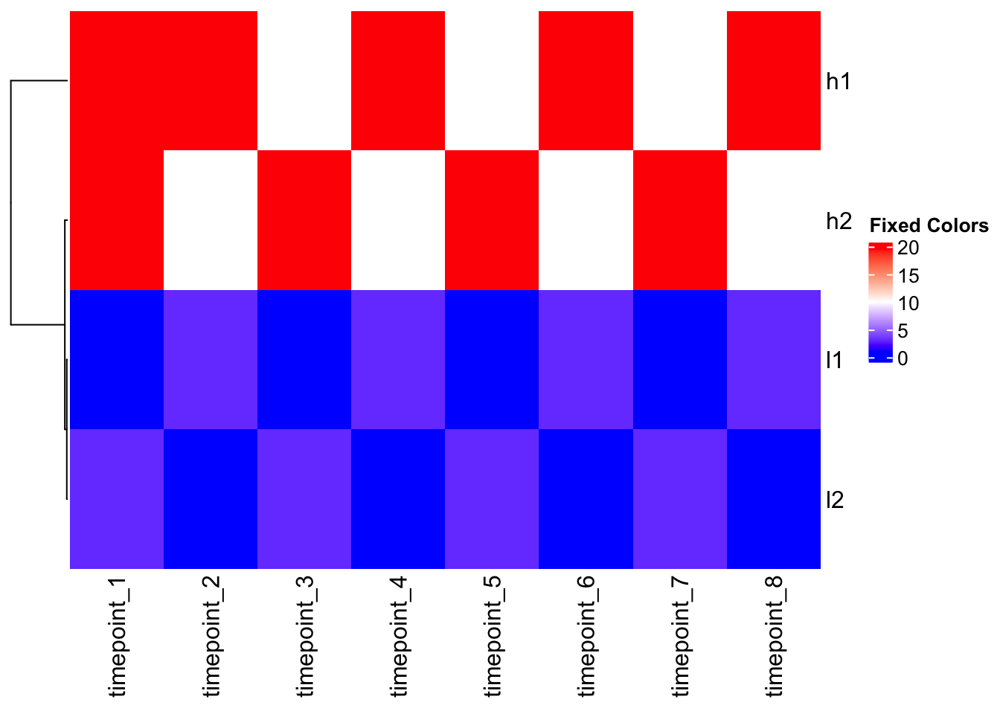
Summary: Critical Decision Points
1. Scaling Strategy (Choose ONE):
- Pre-scale your data if you want to focus on patterns rather than absolute values
- Use correlation distance if you want to preserve original scale but cluster by pattern
- Use raw data only if absolute values are meaningful for your analysis
2. Distance Measure:
- Euclidean: Good for absolute differences (default)
- Correlation: Good for pattern similarity
- Manhattan, others: Depending on data characteristics
3. Color Mapping:
- Always check your data distribution with
quantile() - Use custom color functions for outliers
- Consider whether colors should represent raw values or scaled values
4. Function Choice:
- ComplexHeatmap: Most flexible, no hidden scaling
- heatmap(): Default row scaling, good for basic use
- heatmap.2(): No default scaling, more options
Key Takeaways
- Clustering happens BEFORE scaling in most R heatmap functions
- The
scaleparameter only affects color representation, not clustering - Always understand your data and what you want to visualize
- Pre-scaling or using correlation distance can reveal biological patterns hidden by scale differences
- Color mapping can make or break data interpretation
- Different heatmap functions have different defaults - know what they are!
Remember: Making a heatmap is easy, but making a meaningful heatmap requires understanding these nuances. Your clustering and scaling choices can completely change the biological story your heatmap tells!
Heatmap with TCGA Data: Real-world Application
Now let’s apply what we’ve learned to real cancer genomics data from The Cancer Genome Atlas (TCGA). We’ll visualize the expression of cancer-associated genes across different cancer types and samples.
Load the data
The TCGA data contains TPM (transcripts per million) normalized gene expression values for multiple cancer-associated genes across thousands of samples from 33 cancer types.
library(readr)
library(dplyr)
library(tidyr)
library(ComplexHeatmap)
library(circlize)
# Load the TCGA gene expression data (TPM values)
tcga_data <- read_csv("~/Downloads/TCGA_cancer_genes_expression.csv")
# Explore the structure
head(tcga_data)# A tibble: 6 × 25
...1 TACSTD2 VTCN1 MUC1 NECTIN4 FOLH1 FOLR1 CD276 MSLN CLDN6 ERBB2
<chr> <dbl> <dbl> <dbl> <dbl> <dbl> <dbl> <dbl> <dbl> <dbl> <dbl>
1 43e715bf… 0.704 0 0.675 0.0862 7.21 0 52.8 0.0667 0.0970 1.88
2 1a5db9fc… 25.4 0 2.02 0.0728 23.6 0.122 78.8 0.956 0.255 7.78
3 93b382e4… 1.58 0 0.908 0.699 2.85 1.01 146. 0.0456 0.257 2.91
4 1f39dadd… 0.270 0.0910 0.0429 0.0165 1.16 0.279 48.5 0.0315 0.247 4.91
5 8c8c09b9… 0.412 0 0.115 0.0317 2.41 0.0492 42.3 0.270 0.126 1.49
6 85a86b91… 4.55 4.86 0.0421 0.0683 1.01 0.0225 20.6 0.0134 0.0182 13.5
# ℹ 14 more variables: MUC16 <dbl>, DLL3 <dbl>, CEACAM5 <dbl>, PVR <dbl>,
# EPCAM <dbl>, PROM1 <dbl>, CD24 <dbl>, EGFR <dbl>, MET <dbl>,
# TNFRSF10B <dbl>, tcga.tcga_barcode <chr>,
# tcga.cgc_sample_sample_type <chr>, study <chr>, sample_type <chr>dim(tcga_data)[1] 11348 25Data preparation
The data contains: - Gene expression values (TPM) for
cancer-associated genes - Sample metadata including cancer type
(study) and sample type (tumor vs. normal) - 11,348 samples
across 25 columns (21 genes + 4 metadata columns)
# Check the column names
colnames(tcga_data) [1] "...1" "TACSTD2"
[3] "VTCN1" "MUC1"
[5] "NECTIN4" "FOLH1"
[7] "FOLR1" "CD276"
[9] "MSLN" "CLDN6"
[11] "ERBB2" "MUC16"
[13] "DLL3" "CEACAM5"
[15] "PVR" "EPCAM"
[17] "PROM1" "CD24"
[19] "EGFR" "MET"
[21] "TNFRSF10B" "tcga.tcga_barcode"
[23] "tcga.cgc_sample_sample_type" "study"
[25] "sample_type" # Check unique cancer types
unique(tcga_data$study) %>% length()[1] 33# Check sample types
table(tcga_data$sample_type)
cancer metastatic normal
10021 394 740 Focus on tumor samples only
Let’s filter to tumor samples and summarize expression by cancer type:
# Filter to tumor samples only
tumor_data <- tcga_data %>%
filter(sample_type == "cancer")
# Check dimensions
dim(tumor_data)[1] 10021 25Calculate median expression per gene per cancer type
For visualization clarity, we’ll calculate the median expression of each gene within each cancer type. This reduces the dimensionality and highlights cancer-type-specific expression patterns.
# Get gene columns (exclude metadata columns)
gene_cols <- setdiff(colnames(tumor_data),
c("...1", "tcga.tcga_barcode", "tcga.cgc_sample_sample_type",
"study", "sample_type"))
# Calculate median expression per gene per cancer type
median_expr <- tumor_data %>%
group_by(study) %>%
summarise(across(all_of(gene_cols), median, na.rm = TRUE)) %>%
tibble::column_to_rownames("study")Warning: There was 1 warning in `summarise()`.
ℹ In argument: `across(all_of(gene_cols), median, na.rm = TRUE)`.
ℹ In group 1: `study = "ACC"`.
Caused by warning:
! The `...` argument of `across()` is deprecated as of dplyr 1.1.0.
Supply arguments directly to `.fns` through an anonymous function instead.
# Previously
across(a:b, mean, na.rm = TRUE)
# Now
across(a:b, \(x) mean(x, na.rm = TRUE))# Check the result
dim(median_expr)[1] 32 20head(median_expr[, 1:5]) TACSTD2 VTCN1 MUC1 NECTIN4 FOLH1
ACC 0.3954876 0.00000000 0.1818273 0.03067656 2.0874243
BLCA 661.8630353 3.65963370 47.4768280 94.27139557 0.8555821
BRCA 261.0299500 53.59716929 182.3543318 44.73170660 1.6821121
CESC 859.9931404 2.77101295 93.1439374 85.31153260 0.6291784
CHOL 45.1263235 65.36620629 35.4881279 17.96765276 1.9197128
COAD 9.5038335 0.05293064 44.1769646 9.43587246 0.7486478Apply log2 transformation
TPM values can span several orders of magnitude. Log transformation helps visualize patterns more clearly:
# Add pseudocount and log2 transform
# log2(TPM + 1) is common for RNA-seq data
log2_expr <- log2(median_expr + 1)
# Check the distribution
summary(log2_expr[, 1:3]) TACSTD2 VTCN1 MUC1
Min. :0.1194 Min. :0.00000 Min. :0.241
1st Qu.:1.2457 1st Qu.:0.09181 1st Qu.:1.682
Median :4.0726 Median :0.43380 Median :4.802
Mean :4.7057 Mean :1.43016 Mean :4.267
3rd Qu.:8.0418 3rd Qu.:2.23702 3rd Qu.:5.718
Max. :9.7499 Max. :6.05238 Max. :8.482 Create the heatmap
# Create a color palette
col_fun <- colorRamp2(c(0, 3, 6), c("blue", "white", "red"))
# Basic heatmap of log2(TPM+1) values
Heatmap(as.matrix(log2_expr),
name = "log2(TPM+1)",
col = col_fun,
column_title = "Cancer-Associated Genes",
row_title = "Cancer Type",
row_names_gp = gpar(fontsize = 8),
column_names_gp = gpar(fontsize = 9),
column_names_rot = 45,
heatmap_legend_param = list(
title = "Expression",
direction = "vertical"
))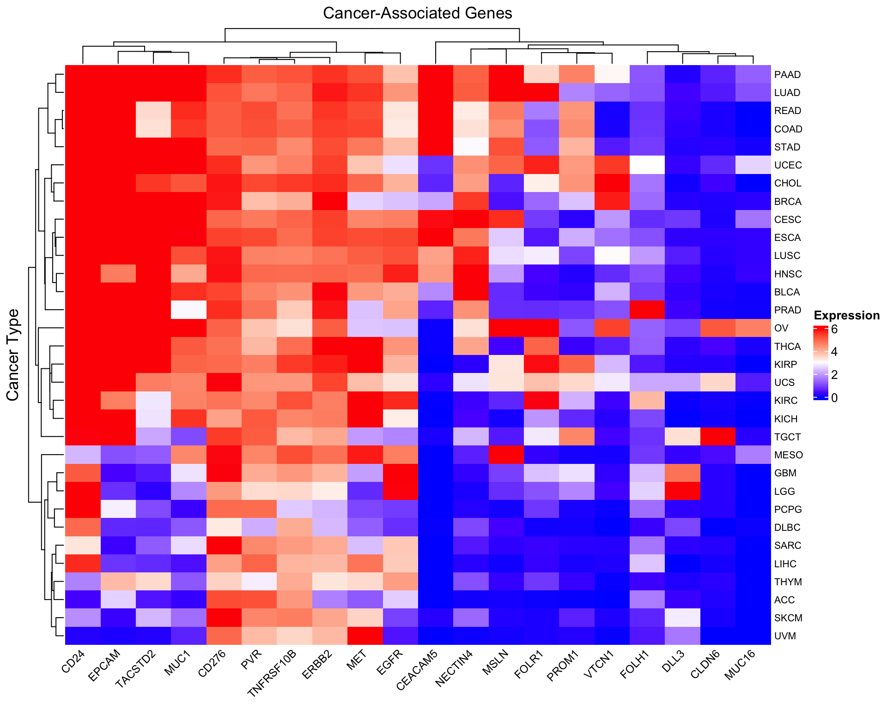
Scale by gene for pattern comparison
To compare expression patterns across genes with different baseline levels, we can scale each gene (column):
# Scale columns (genes) - center and scale to unit variance
scaled_expr <- scale(as.matrix(log2_expr))
# Create scaled heatmap
Heatmap(scaled_expr,
name = "Z-score",
col = colorRamp2(c(-2, 0, 2), c("blue", "white", "red")),
column_title = "Cancer-Associated Genes (Scaled)",
row_title = "Cancer Type",
row_names_gp = gpar(fontsize = 8),
column_names_gp = gpar(fontsize = 9),
column_names_rot = 45,
heatmap_legend_param = list(
title = "Z-score",
direction = "vertical"
))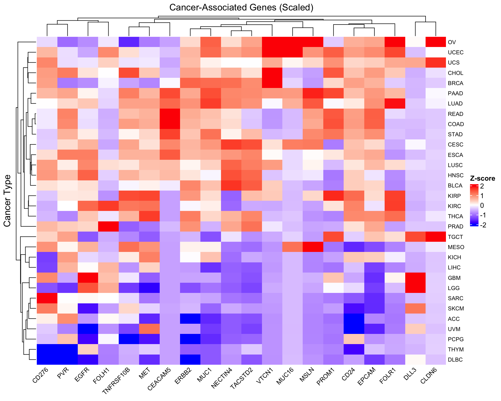
Add annotations for biological context
Let’s annotate the heatmap with cancer categories to help interpretation:
# Define broad cancer categories (simplified example)
# You can customize this based on your biological knowledge
cancer_categories <- data.frame(
study = rownames(log2_expr),
category = case_when(
grepl("BRCA|OV|UCEC|UCS|CESC", rownames(log2_expr)) ~ "Gynecologic",
grepl("PRAD|BLCA|KIRC|KIRP|KICH", rownames(log2_expr)) ~ "Urologic",
grepl("LUAD|LUSC|MESO", rownames(log2_expr)) ~ "Thoracic",
grepl("COAD|READ|STAD|ESCA", rownames(log2_expr)) ~ "Gastrointestinal",
grepl("GBM|LGG", rownames(log2_expr)) ~ "Brain",
grepl("HNSC|THCA", rownames(log2_expr)) ~ "Head & Neck",
TRUE ~ "Other"
)
)
# Create row annotation
row_ha <- rowAnnotation(
Category = cancer_categories$category,
col = list(Category = c(
"Gynecologic" = "#E41A1C",
"Urologic" = "#377EB8",
"Thoracic" = "#4DAF4A",
"Gastrointestinal" = "#984EA3",
"Brain" = "#FF7F00",
"Head & Neck" = "#FFFF33",
"Other" = "#A65628"
))
)
# Enhanced heatmap with annotation
Heatmap(scaled_expr,
name = "Z-score",
col = colorRamp2(c(-2, 0, 2), c("blue", "white", "red")),
column_title = "Cancer-Associated Gene Expression Across TCGA",
row_title = "Cancer Type",
left_annotation = row_ha,
row_names_gp = gpar(fontsize = 8),
column_names_gp = gpar(fontsize = 9),
column_names_rot = 45,
heatmap_legend_param = list(
title = "Expression\nZ-score",
direction = "vertical"
))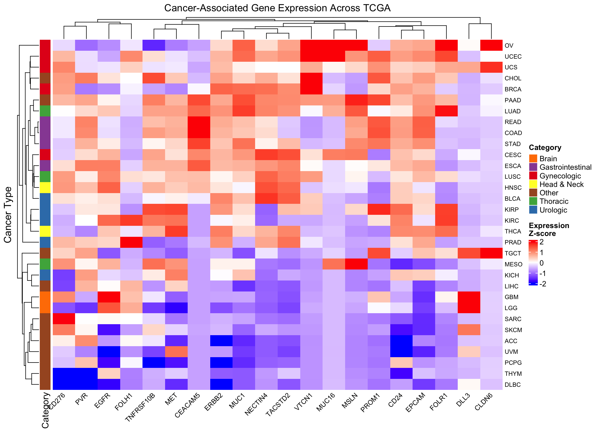
Biological validation examples
Let’s verify some known biology in our heatmap:
# FOLH1 (prostate-specific membrane antigen) - should be high in prostate cancer
prostate_folh1 <- tumor_data %>%
filter(study == "TCGA-PRAD") %>%
summarise(median_FOLH1 = median(FOLH1, na.rm = TRUE))
# MSLN (mesothelin) - should be high in mesothelioma
meso_msln <- tumor_data %>%
filter(study == "TCGA-MESO") %>%
summarise(median_MSLN = median(MSLN, na.rm = TRUE))
# ERBB2 (HER2) - often amplified in breast cancer
breast_erbb2 <- tumor_data %>%
filter(study == "TCGA-BRCA") %>%
summarise(median_ERBB2 = median(ERBB2, na.rm = TRUE))
cat("FOLH1 in Prostate Cancer:", prostate_folh1$median_FOLH1, "\n")FOLH1 in Prostate Cancer: NA cat("MSLN in Mesothelioma:", meso_msln$median_MSLN, "\n")MSLN in Mesothelioma: NA cat("ERBB2 in Breast Cancer:", breast_erbb2$median_ERBB2, "\n")ERBB2 in Breast Cancer: NA Key insights from TCGA heatmap
- Hierarchical clustering reveals cancer types with similar gene expression signatures
- Gene-specific patterns emerge: some genes are broadly expressed, others are cancer-type specific
- Scaling matters: The unscaled heatmap shows absolute expression levels, while the scaled version reveals relative patterns
- Biological validation: Known gene-cancer associations (FOLH1-prostate, MSLN-mesothelioma) should be visible
Practical considerations for TCGA data
- TPM normalization: Already performed, allows cross-sample comparison
- Log transformation: Essential for visualizing RNA-seq data due to wide dynamic range
- Sample size variation: Different cancer types have different numbers of samples (affects median stability)
- Tumor heterogeneity: Even within a cancer type, expression varies widely between samples
- Clinical context: Always validate computational findings with biological knowledge
Pro tip: When working with large expression matrices like TCGA, always start with summary statistics (median/mean per group) before attempting to visualize individual samples. This makes patterns more interpretable and reduces computational burden.
sessionInfo()R version 4.4.1 (2024-06-14)
Platform: aarch64-apple-darwin20
Running under: macOS Sonoma 14.1
Matrix products: default
BLAS: /Library/Frameworks/R.framework/Versions/4.4-arm64/Resources/lib/libRblas.0.dylib
LAPACK: /Library/Frameworks/R.framework/Versions/4.4-arm64/Resources/lib/libRlapack.dylib; LAPACK version 3.12.0
locale:
[1] en_US.UTF-8/en_US.UTF-8/en_US.UTF-8/C/en_US.UTF-8/en_US.UTF-8
time zone: America/New_York
tzcode source: internal
attached base packages:
[1] grid stats graphics grDevices utils datasets methods
[8] base
other attached packages:
[1] tidyr_1.3.1 dplyr_1.1.4 readr_2.1.5
[4] circlize_0.4.16 gplots_3.1.3.1 ComplexHeatmap_2.20.0
[7] workflowr_1.7.1
loaded via a namespace (and not attached):
[1] shape_1.4.6.1 rjson_0.2.22 xfun_0.52
[4] bslib_0.8.0 GlobalOptions_0.1.2 caTools_1.18.2
[7] processx_3.8.4 tzdb_0.4.0 callr_3.7.6
[10] generics_0.1.3 Cairo_1.6-2 vctrs_0.6.5
[13] tools_4.4.1 ps_1.7.7 bitops_1.0-8
[16] stats4_4.4.1 parallel_4.4.1 tibble_3.2.1
[19] fansi_1.0.6 highr_0.11 cluster_2.1.6
[22] pkgconfig_2.0.3 KernSmooth_2.23-24 RColorBrewer_1.1-3
[25] S4Vectors_0.42.1 lifecycle_1.0.4 compiler_4.4.1
[28] stringr_1.5.1 git2r_0.35.0 getPass_0.2-4
[31] codetools_0.2-20 clue_0.3-65 httpuv_1.6.15
[34] htmltools_0.5.8.1 sass_0.4.9 yaml_2.3.10
[37] later_1.3.2 pillar_1.9.0 crayon_1.5.3
[40] jquerylib_0.1.4 whisker_0.4.1 cachem_1.1.0
[43] magick_2.8.5 iterators_1.0.14 foreach_1.5.2
[46] gtools_3.9.5 tidyselect_1.2.1 digest_0.6.36
[49] stringi_1.8.4 purrr_1.0.2 rprojroot_2.0.4
[52] fastmap_1.2.0 colorspace_2.1-1 cli_3.6.3
[55] magrittr_2.0.3 utf8_1.2.4 withr_3.0.0
[58] promises_1.3.0 bit64_4.0.5 rmarkdown_2.27
[61] httr_1.4.7 matrixStats_1.3.0 bit_4.0.5
[64] hms_1.1.3 png_0.1-8 GetoptLong_1.0.5
[67] evaluate_0.24.0 knitr_1.48 IRanges_2.38.1
[70] doParallel_1.0.17 rlang_1.1.4 Rcpp_1.0.13
[73] glue_1.8.0 BiocGenerics_0.50.0 vroom_1.6.5
[76] rstudioapi_0.16.0 jsonlite_1.8.8 R6_2.5.1
[79] fs_1.6.4